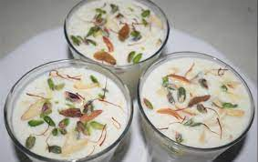

Ingredients
- Curd
- Dates
- almond
- raisins
- cashew nuts
- pistachios
- saffron
- brown sugar
Directions
- Take a cup full of curd.
- Cut dates and dryfruits into small pieces and mix well in the curd.
- Add brown sugar to it.
- Garnish the mixture with saffron.
- refrigerate in the freezer for 2 hours and it is ready to serve.